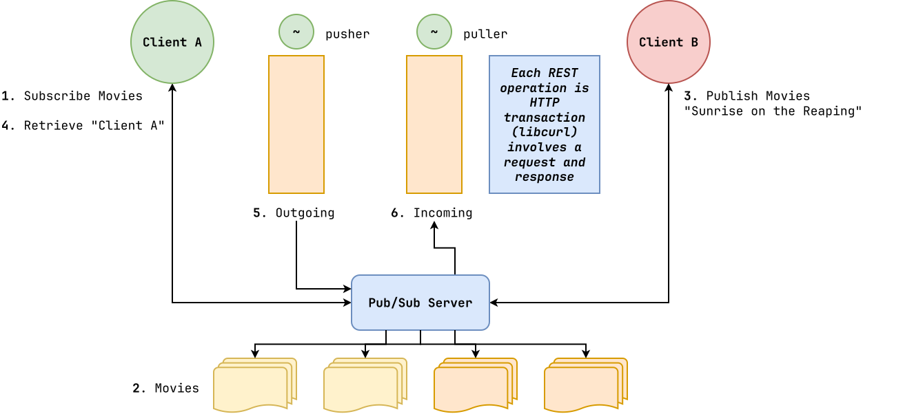
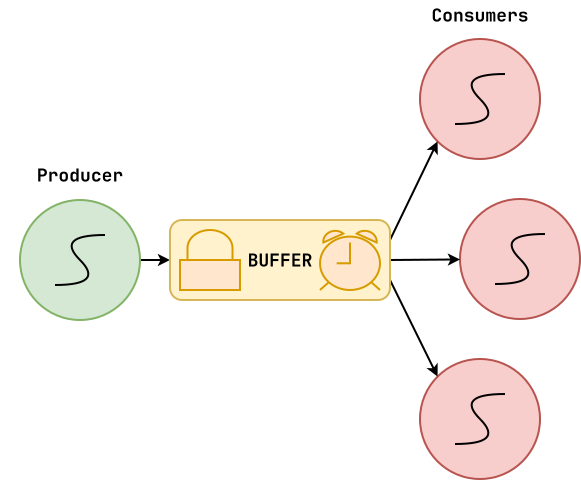

Review: Locks¶
-
Project 01: We be graded soon...
-
What is a lock?
-
Mechanism to prevent thread from accessing critical section (shared resource).
-
Helps avoid race conditions!
How do we use a lock?
-
Parties agree to acquire lock before accessing shared resource.
-
If can't acquire, then wait until it is available (mutual exclusion).
Project 02: Pub / Sub¶
Analogy: Mobile phone subscribes to a Pub/Sub system to get notifications.

Need to use library to implement chat application.
Concurrent DS: Producer / Consumer¶
In this classic concurrency problem, we have one more producers generating data that one or more consumers must process:
Concurrent DS: Producer / Consumer (Skit)¶
-
Producer puts balls into cups.
-
Performs push (advance writer index/pointer).
-
Eventually runs out of space... or move back to from (circular array).
-
Can't push if full.
Consumer retrieves balls from cups.
-
Performs pop (advance reader index/pointer)
-
Need to careful to not advance reader past writer.
-
Can't pop if empty.
If we have someone consuming and someone producing,
then need to synchronize access to the resource!Concurrent DS: Producer / Consumer (Pseudo-Code)¶
This version is full of
race conditions!# Version 0 - No checks def Producer(queue): while True: data = produce() queue.push(data) def Consumer(queue): while True: data = queue.pop() consume(data) # Version 1 - If def Producer(queue): while True: data = produce() if not queue.full(): # Add check queue.push(data) def Consumer(queue): while True: if queue.empty(): # Add check data = queue.pop() consume(data) # Version 2 - While def Producer(queue): while True: data = produce() while not queue.full(): # Add busy waiting pass queue.push(data) def Consumer(queue): while True: while queue.empty(): # Add busy waiting pass data = queue.pop() consume(data) # Version 3 - Locks (Race Condition) def Producer(queue): while True: data = produce() while not queue.full(): pass Lock() # Lock access to queue queue.push(data) Unlock() def Consumer(queue): while True: while queue.empty(): pass Lock() # Lock access to queue data = queue.pop() Unlock() consume(data) # Version 4 - Locks (Deadlock) def Producer(queue): while True: data = produce() Lock() # Move lock while not queue.full(): pass queue.push(data) Unlock() def Consumer(queue): while True: Lock() # Move lock while queue.empty(): pass data = queue.pop() Unlock() consume(data)Concurrent DS: Monitor¶
Solve this problem with a monitor that uses locks and condition variables internally to provide safe access to shared resources.

Abstract the details of synchronization behind the interface of a concurrent data structure.
def push(self, data): mutex.lock() while queue.full(): # Busy Waiting pass queue.push(data) produced.signal() mutex.unlock() def pop(self): mutex.lock() while queue.empty(): # Busy Waiting pass data = queue.pop() mutex.unlock() return dataObservations:
-
Producer just uses
Push(), Consumer just usesPop(). -
Problem 1: Grab lock and stuck in while loop forever (deadlock).
-
Problem 2: Busy waiting.
Concurrent DS: Queue (comments)¶
-
Annotate
pc.c(comments).- Review thread primitives (
thread.h). - Discuss sentinel value for terminating.
Discuss
queue.handqueue.c.- Review circular array.
- Discuss sentinel handling in
queue_pop().
Concurrent DS: Queue (1)¶
// queue.h struct Queue { ... Mutex lock; // Declare lock }; // queue.c Queue * queue_create(...) { Queue *q = calloc(...); if (q) { ... mutex_init(&q->lock, NULL); // Initialize lock } return q; } void queue_push(...) { mutex_lock(&q->lock); // Acquire lock ... mutex_unlock(&q->lock); // Release lock } int queue_pop(Queue *q) { mutex_lock(&q->lock); // Acquire lock ... mutex_unlock(&q->lock); // Release lock return value; }Observations:
- Problem: Deadlock due to busy waiting.
Concurrent DS: Queue (2)¶
// queue.h struct Queue { ... Mutex lock; Cond cond; // Declare condition variable }; // queue.c Queue * queue_create(...) { Queue *q = calloc(...); if (q) { ... mutex_init(&q->lock, NULL); cond_init(&q->cond, NULL); // Initialize condition variable } return q; } void queue_push(...) { mutex_lock(&q->lock); while (q->size >= q->capacity) { // 1. Give up lock // 2. Go to sleep cond_wait(&q->cond, &q->lock); // Wait until condition changes // 3. Wake up // 4. Take the lock back } ... cond_signal(&q->cond); // Signal that condition has changed mutex_unlock(&q->lock); } int queue_pop(Queue *q) { mutex_lock(&q->lock); while (q->size == 0) { cond_wait(&q->cond, &q->lock); // Wait until condition changes } ... cond_signal(&q->cond); // Signal that condition has changed mutex_unlock(&q->lock); return value; }Observations:
-
Discuss: Use
whileinstead ofifdue to spurious interrupts (condition may not have changed yet). -
Problem: Hangs if we don't call
cond_signal. -
Skit: once producer becomes full, calls
cond_wait... consumer takes one item, wakes up, another consumer, who eats, wakes up another consumer... OS may schedule consumer instead of producer!
Concurrent DS: Queue (3)¶
// queue.h struct Queue { ... Mutex lock; Cond consumed; // Declare condition variable Cond produced; // Declare condition variable }; // queue.c Queue * queue_create(...) { Queue *q = calloc(...); if (q) { ... mutex_init(&q->lock, NULL); cond_init(&q->consumed, NULL); // Initialize condition variable cond_init(&q->produced, NULL); // Initialize condition variable } return q; } void queue_push(...) { mutex_lock(&q->lock); while (q->size >= q->capacity) { cond_wait(&q->consumed, &q->lock); // Wait for consumed } ... cond_signal(&q->produced); // Signal produced mutex_unlock(&q->lock); } int queue_pop(Queue *q) { mutex_lock(&q->lock); while (q->size == 0) { cond_wait(&q->produced, &q->lock); // Wait for produced } ... cond_signal(&q->consumed); // Signal consumed mutex_unlock(&q->lock); return value; }Condition Variable: Waiting¶
cond_wait(&cond, &lock);
-
Give up lock
-
Go to sleep
-
Wake up
-
Take back lock
Locks: Evaluation¶
To evaluate a lock implementation, we need to consider the following three metrics:
-
Correctness
Does it actually provide mutual exclusion?
-
Fairness
Does it give each thread a fair shot at acquiring the lock?
-
Performance
How much overhead is added by using the lock?
Locks: Disabling Interrupts¶
One way to implement locks is to simply disable interrupts:
class Mutex: def Lock(self): DisableInterrupts() def Unlock(self): EnableInterrupts()Problems
-
Correctness
Possibly lose interrupts.
-
Fairness
Need to trust users.
-
Performance
Doesn't scale to multiple processors.
Locks: Implementation (Spin Lock)¶
A better way is to implement a spin lock:
class Mutex: flag: int = 0 # 0: available, 1: unavailable def Lock(self): while self.flag == 1: # Test lock pass # Spin until lock is available self.flag = 1 # Set lock def Unlock(self): self.flag = 0 # Clear lockProblems
-
Correctness
Race condition
-
Performance
Busy waiting
Locks: Test and Set¶
To effectively implement a lock, we need special hardware instructions that provide atomic exchanges:
def TestAndSet(old_ptr: int*, new_value: int): old_value = *old_ptr # Fetch old value at old pointer *old_ptr = new_value # Store new value into old pointer return old_value # Return old valueThe above three lines all happen in one instruction (atomically)
Locks: Test and Set (Spin Lock)¶
With the TestAndSet instruction, we can implement a better spin lock.
class Mutex: flag: int = 0 # 0: available, 1: unavailable def Lock(self): # Test and Set lock atomically while TestAndSet(self.flag, 1) == 1: pass # Spin until lock is available def Unlock(self): self.flag = 0 # Clear lockProblems
-
Performance
Busy waiting
Locks: Yielding (Spin Lock)¶
One way to reduce the cost of busy waiting is to simply yield as we spin:
class Mutex: flag: int = 0 # 0: available, 1: unavailable def Lock(self): # Test and Set lock atomically while TestAndSet(self.flag, 1) == 1: yield() # Give up the CPU def Unlock(self): self.flag = 0 # Clear lockProblems
-
Fairness
Starvation
-
Performance
Context switches
Example: Slackline (Locks, CVs)¶
# Global Variables size_t CAPACITY = 3 # Max size_t Slackers = 0 # Current Mutex Lock Cond Line # Threads def thread_each_person(): get_on() go_across_slackline() get_off()# Functions def get_on(): mutex_lock(Lock) while Slackers >= CAPACITY: cond_wait(Line, Lock) Slackers++ mutex_unlock(Lock) def get_off(): mutex_lock(Lock) Slackers-- cond_signal(Line) mutex_unlock(Lock) - Review thread primitives (
-
-